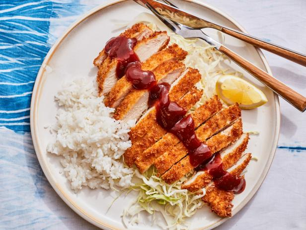

Chicken Katsu

Ingredients
Katsu:
- 8 oz boneless/skinless chicken thighs
- 1 tsp garlic powder
- 1 tsp kosher salt
- ¼ tsp black pepper
- 1 large egg
- ⅓ cup all purpose flour
- ½ cup panko
- vegetable oil
Sauce:
- ¼ cup Ketchup
- 1 Tbsp Worcestershire sauce
- ½ Tbsp soy sauce
- ½ Tbsp mirin
- ½ white granulated sugar
- 1 tsp dark brown sugar
- ½ tsp garlic powder
- ¼ tsp ginger powder
Instructions
- Clean the chicken thighs and remove any skin and bones. Make sure it has the same thickness through and if there are thicker areas, fileting these thicker areas with a shallow cut so they lay flat.
- Combine the garlic powder, salt, and pepper in a bowl.
- Thoroughly coat the chicken pieces with this seasoning. Marinate for 15 minutes while you prepare the katsu sauce and prepare for dredging.
- Add all the ingredients for the katsu sauce in a bowl and whisk until it’s fully incorporated. Set aside.
- Put the flour, beaten egg, and panko into 3 separate shallow containers.
- Dip the chicken thigh pieces into the flour and thoroughly coat.
- Then dip into the egg, letting any excess drip off.
- Lastly, coat completely with the panko. Place the coated chicken thigh on a wire rack. Repeat with all the chicken.
- Preheat the oil to 350 °F over medium heat in a heavy bottom pan. Carefully lower each chicken piece into the oil and for about 1 minute per side or until golden brown. Don't crowd the pot. Use a thermometer to make sure it’s done (145 °F internally).
- Serve chicken with rice and katsu sauce.